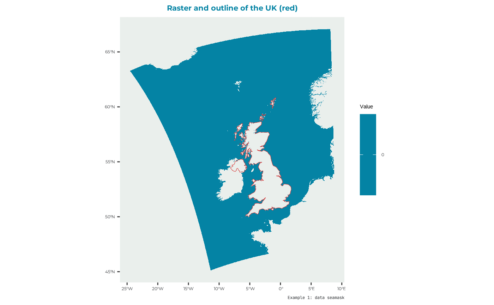
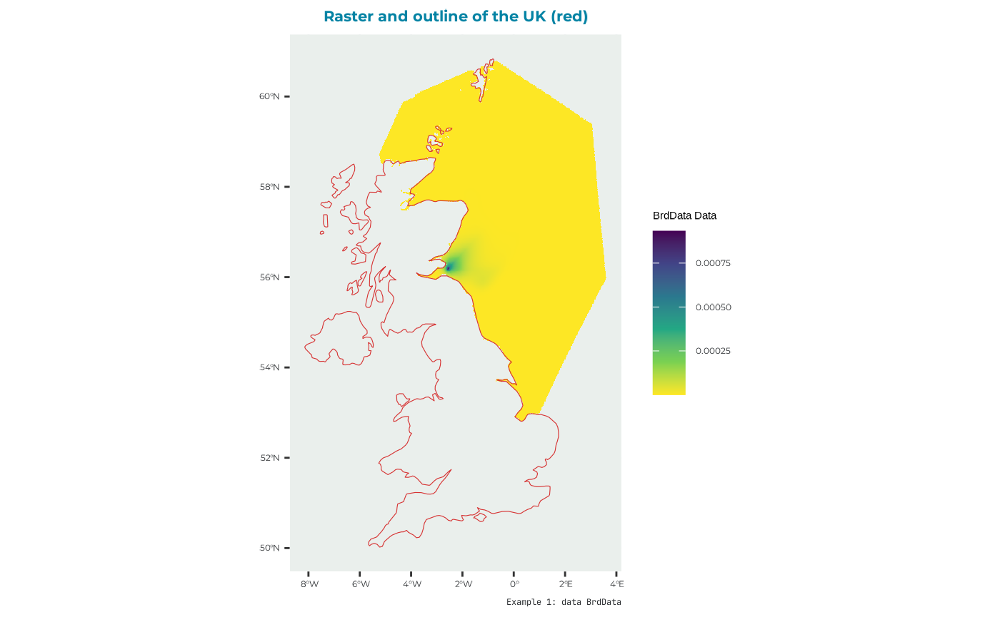
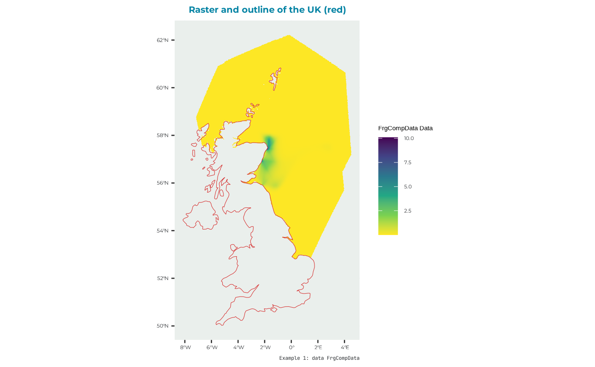
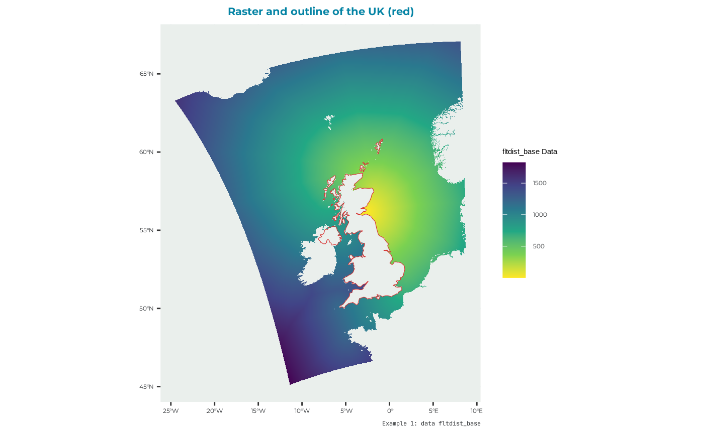
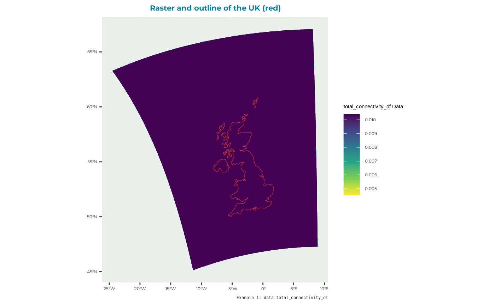

Example seabORD run
example_1.RmdLoad the seabORD package
Before following this example, the model is assumed to be already calibrated. If not follow the article on calibration before running this example.
Preparing the inputs
To run seabORD several inputs are needed:
| arguments | type | description |
|---|---|---|
| Par | List | The main parameters controlling/defining this run |
| modPar | List | Parameters relating to the model mode and computer environment |
| ordPar | List | Input parameters relating to the ORDs |
| switches | List | A set of switches/flags used to control optional features of the run |
| seamask | Raster | land/sea grid, 1km expected. |
| spadat1 | description TBC | |
| spadat2 | description TBC | |
| spdat | Species-specific parameters | |
| BrdData | description TBC | |
| FrgCompData | description TBC | |
| fltdist_base | Flight distance by sea, without ORDs. See user guide for details. | |
| FlightGridcorrection | Flight distance transition layer (gdistance) | |
| ORDpoly | The ORD footprints |
The package comes with some example input data to run the model with. Here’s an example run of the model with detailed explanation for each input argument.
Par
List for biological parameters:
thisSpecies:
colonies:
Nscalefactor:
Prob_Displacement
Prob_Barrier
PreyType
collision
SiteSelectionMethod
MaxDistancekm
PropInRange
Npairspercol
Pmedian
Par_example <- seabORD::example_1_lists$Par
str(Par_example)
#> List of 12
#> $ thisSpecies : chr "KI"
#> $ colonies : chr "UK9004171"
#> $ Nscalefactor : num 1
#> $ Prob_Displacement : num 0.6
#> $ Prob_Barrier : num 1
#> $ PreyType : chr "Uniform"
#> $ collision : chr "Off"
#> $ SiteSelectionMethod: chr "Map"
#> $ MaxDistancekm : num 0
#> $ PropInRange : num 0
#> $ Npairspercol : num 2898
#> $ Pmedian : num 158modPar
List for model parameters.
Nparallel
initialseed
reference
outputdir
Nreplicates
make a folder in the directory to store your output (you can place it wherever)
# Create the ouput folder "output_seabORD" if not existing already
if (!dir.exists("output_seabORD")) {
dir.create("output_seabORD")
}and then the list of modPar
modPar_example <- seabORD::example_1_lists$modPar
str(modPar_example)
#> List of 5
#> $ Nparallel : logi NA
#> $ initialseed: num 6598
#> $ reference : chr "serial_scenario_KI_UK9004171"
#> $ outputdir : chr "output_seabORD"
#> $ Nreplicates: num 1ordPar
List for wind farm parameters
include_ORDs
parnames
FootprintBorder
BufferZone
ordPar_example <- seabORD::example_1_lists$ordPar
str(ordPar_example)
#> List of 4
#> $ include_ORDs : chr [1:2] "NEART" "INCAP"
#> $ parnames : chr "NEART;INCAP"
#> $ FootprintBorder: num 2
#> $ BufferZone : num 5Switches
This parameter requires a llist() object that defines the optional features of the run. It accepts the following options:
environment : “serial” or “parallel”
modelmode: “scenario” or “calibration”
debugmode: 0, 1, or 2
bycol: TRUE or FALSE
bysus: TRUE or FALSE
bych: TRUE or FALSE
printdaily: TRUE or FALSE
printseason: TRUE or FALSE
printpair: TRUE or FALSE
minout: TRUE or FALSE
silent: TRUE or FALSE
saverds: TRUE or FALSE
savebirdflightmap: TRUE or FALSE
There is an example list available in the package that can be accessed by simply call in the built-in list “example_switch_list”:
#get the example switches list
switches_example <- seabORD::example_1_lists$switches
#check the setting of this example
str(switches_example)
#> List of 14
#> $ environment : chr "serial"
#> $ modelmode : chr "scenario"
#> $ debugmode : num 0
#> $ bycol : logi FALSE
#> $ bysus : logi FALSE
#> $ bych : logi FALSE
#> $ printdaily : logi FALSE
#> $ printseason : logi FALSE
#> $ printpair : logi FALSE
#> $ printfinal : logi FALSE
#> $ minout : logi FALSE
#> $ silent : logi FALSE
#> $ saverds : logi FALSE
#> $ savebirdflightmap: logi FALSEIn this example seabORD will in serial and in scenario mode; without debugging and by saving the output as a .rds file.
seamask
Example data to be used as seamask can be found built in the package as “seamask_3035_example” to make the raster for the seamask:
example_data_seamask <- seabORD::seamask_3035_example
str(example_data_seamask)
#> List of 2
#> $ matrix : num [1:3469400, 1] 0 0 0 0 0 0 0 0 0 0 ...
#> ..- attr(*, "dimnames")=List of 2
#> .. ..$ : NULL
#> .. ..$ : chr "seamask_3035"
#> $ metadata:List of 7
#> ..$ n_rows: num 2200
#> ..$ n_cols: num 1577
#> ..$ x_min : num 2661966
#> ..$ x_max : num 4238966
#> ..$ y_min : num 2685159
#> ..$ y_max : num 4885159
#> ..$ crs : chr "PROJCRS[\"unknown\",\n BASEGEOGCRS[\"unknown\",\n DATUM[\"Unknown based on GRS80 ellipsoid\",\n "| __truncated__We can use this data to make the raster using the terra package
#make a raster with the right dimension
seamask_example <- terra::rast(
nrows = example_data_seamask$metadata[["n_rows"]],
ncols = example_data_seamask$metadata[["n_cols"]],
xmin = example_data_seamask$metadata[["x_min"]],
xmax = example_data_seamask$metadata[["x_max"]],
ymin = example_data_seamask$metadata[["y_min"]],
ymax = example_data_seamask$metadata[["y_max"]],
crs = example_data_seamask$metadata[["crs"]]
)
#fill it with the data
terra::values(seamask_example) <- example_data_seamask$matrixwhich looks like

make it a raster (not sustainable)
spadat1
For this example the values for spadat1 for the site “UK9004171” are taken from the built-in dataset “spacoordinates” which has data for all the sites relevant for the CEF. Get only what’s relevant for this example.
#open the dataset provided with the pacakge
spadat1_example <-
tibble::as_tibble( #as a tibble
dplyr::filter(seabORD::spacoordinates, #the full dataset
SITECODE == "UK9004171") #the iste of interest
)
print(t(spadat1_example)) #display the data for the example site
#> [,1]
#> SITECODE "UK9004171"
#> CEF.include "TRUE"
#> Marine "FALSE"
#> Longitude "-2.564"
#> Latitude "56.186"
#> dat.CELLNO "1658699"
#> dat.ATSEA "TRUE"
#> flt.LONG "-2.558333"
#> flt.LAT "56.18875"
#> flt.CELLNO "1658699"
#> flt.ATSEA "TRUE"
#> flt.DIST "0.4661833"
#> flt.near "TRUE"
#> datxy.E "3544920"
#> datxy.N "3743923"
#> datxy.CELLNO "1800240"
#> datxy.ATSEA "TRUE"
#> fltxy.E "3544466"
#> fltxy.N "3743659"
#> fltxy.CELLNO "1800240"
#> fltxy.ATSEA "TRUE"
#> fltxy.DIST "525.4244"
#> fltxy.near "TRUE"spadat2
Can be derived from “spalist”
spadat2_example <-
tibble::as_tibble( #as a tibble
dplyr::filter(seabORD::spalist, #the whole list
SITE_CODE == "UK9004171") #the site of interest
)
#take a look
print(t(spadat2_example))
#> [,1]
#> SITE_CODE "UK9004171"
#> SITE_NAME "Forth Islands"
#> CEF.include "Y"
#> Marine.only NA
#> Altnames.sufficient NA
#> Altnames.SPApolys NA
#> Altnames.SMP NA
#> Altnames.Productivity NA
#> Altnames.BDMPS NA
#> Altnames.FR NAspdat
The species specific data for the Black-legged Kittiwake be derived from the built in dataset “energeticsandpreydata” that has data for all 4 species that seabORD models.
spdat_example <-
#tibble::as_tibble( #as a tibble
dplyr::filter(seabORD::energeticsandpreydata,
Code == "KI")
# )
#take a look
print(t(spdat_example))
#> [,1]
#> Code "KI"
#> Species "Black-legged Kittiwake"
#> BM_adult_mn "372.69"
#> BM_adult_sd "33.62"
#> BM_adult_mortf "0.6"
#> BM_adult_abdn "0.8"
#> BM_chick_mn "36"
#> BM_chick_sd "2.2"
#> BM_Chick_mortf "0.6"
#> daylength "36"
#> seasonlength "30"
#> unattend_max_hrs "18"
#> adult_DEE_mn "802"
#> adult_DEE_sd "196"
#> chick_DER "525.7"
#> IR_max "4.369"
#> IR_half_a "900"
#> IR_half_b "0.02"
#> flight_msec "13.1"
#> assim_eff "0.74"
#> energy_prey "6.52"
#> energy_nest "427.8"
#> energy_flight "1400.7"
#> energy_searest "400.6"
#> energy_forage "1400.7"
#> energy_warming "26"
#> chick_mass_a "11"
#> adult_mass_KG "38.5"
#> beta "0.038"
#> basesurv_poor "0.65"
#> basesurv_modr "0.8"
#> basesurv_good "0.9"
#> massloss_poor "20"
#> massloss_modr "10"
#> massloss_good "0"
#> chicksurv_poor "10"
#> chicksurv_modr "50"
#> chicksurv_good "100"BrdData
there is a built in example dataset for this run. This is a raster file that must re-constructed from the data as follows
example_data_brd <- seabORD::BrdData_example
#make the raster with the right dimensions..
BrdData_example <- terra::rast(
nrows = example_data_brd$metadata[["n_rows"]],
ncols = example_data_brd$metadata[["n_cols"]],
xmin = example_data_brd$metadata[["x_min"]],
xmax = example_data_brd$metadata[["x_max"]],
ymin = example_data_brd$metadata[["y_min"]],
ymax = example_data_brd$metadata[["y_max"]],
crs = example_data_brd$metadata[["crs"]]
)
#fill it with the data
terra::values(BrdData_example) <- example_data_brd$matrixWhich has data that plot like this:

as a raster
FrgCompData
Also example data available
example_data_frg <- seabORD::frgcompdata_example
#make the raster with the right dimensions..
FrgCompData_example <- terra::rast(
nrows = example_data_frg$metadata[["n_rows"]],
ncols = example_data_frg$metadata[["n_cols"]],
xmin = example_data_frg$metadata[["x_min"]],
xmax = example_data_frg$metadata[["x_max"]],
ymin = example_data_frg$metadata[["y_min"]],
ymax = example_data_frg$metadata[["y_max"]],
crs = example_data_frg$metadata[["crs"]]
)
#fill it with the data
terra::values(FrgCompData_example) <- example_data_frg$matrixwhich looks like:

as raster
fltdist_base
data available for the example; we construct it as a raster
UK9004171_bysea <- seabORD::UK9004171_bysea_3035
#make the raster with the right dimensions..
fltdist_base_example <- terra::rast(
nrows = UK9004171_bysea$metadata[["n_rows"]],
ncols = UK9004171_bysea$metadata[["n_cols"]],
xmin = UK9004171_bysea$metadata[["x_min"]],
xmax = UK9004171_bysea$metadata[["x_max"]],
ymin = UK9004171_bysea$metadata[["y_min"]],
ymax = UK9004171_bysea$metadata[["y_max"]],
crs = UK9004171_bysea$metadata[["crs"]]
)
#fill it with the data
terra::values(fltdist_base_example) <- UK9004171_bysea$matrixwhich looks like:

as a ratser brick
FlightGridcorrection
It’s a TransitionLayer class object. One example provided that can be loaded
FlightGridcorrection <- seabORD::FlightGridcorrection_3035and looks like:

Running seabORD
Now that all the inputs are ready we can run the model using:
# SeabORDoutput <- seabord(Par = Par_example,
# ordPar = ordPar_example,
# modPar = modPar_example,
# switches = switches_example,
# seamask = seamask_example,
# spadat1 = spadat1_example,
# spadat2 = spadat2_example,
# spdat = spdat_example,
# BrdData = BrdData_example,
# FrgCompData = FrgCompData_example,
# fltdist_base = fltdist_base_example,
# FlightGridcorrection = FlightGridcorrection,
# ORDpoly = ORDpoly_example)the run can take some time..
the output will be saved in in your output directory set up in
modPar.
To learn more about the main functions behind seabORD you can read the article on the main functions
To see how you can read in and plot the results you can read the article on how to interpret the results.